2-1막 · 고딕 방으로 돌아오다
한국어 번역은 독일어 원문에 대응하는 자동 번역 초안입니다.
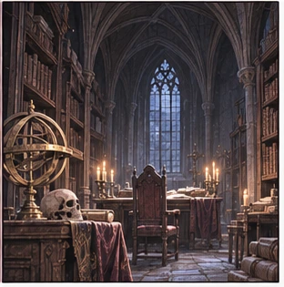
독일어 원문 · 한국어 번역
2. Akt--Hochgewölbtes enges gotisches Zimmer
MEPHISTOPHELES:
Hier lieg, Unseliger! verführt
Zu schwergelöstem Liebesbande!
Wen Helena paralysiert,2막 - 높은 아치형의 좁은 고딕 양식의 방 메피스토펠레스: 여기 누워 있어, 가엾은 놈아! 유혹 심하게 깨진 사랑의 관계에! 헬레나가 마비시킨 사람,
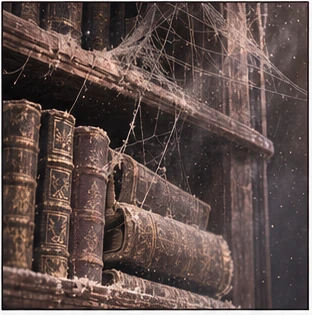
독일어 원문 · 한국어 번역
Der kommt so leicht nicht zu Verstande.
Blick' ich hinauf, hierher, hinüber,
Allunverändert ist es, unversehrt;
Die bunten Scheiben sind, so dünkt mich, trüber,그는 그렇게 쉽게 정신을 차리지 못합니다. 나는 여기를 올려다본다. 그것은 모두 변하지 않고 손상되지 않았습니다. 컬러풀한 디스크가 더 칙칙해 보이는 것 같아요.
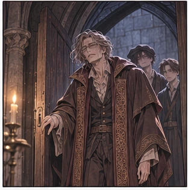
독일어 원문 · 한국어 번역
Die Spinneweben haben sich vermehrt;
Die Tinte starrt, vergilbt ist das Papier;
Doch alles ist am Platz geblieben;
Sogar die Feder liegt noch hier,거미줄이 늘어났습니다. 잉크는 뻣뻣하고 종이는 누렇게 변했습니다. 그러나 모든 것이 그대로 유지되었습니다. 깃털도 아직 여기 있네
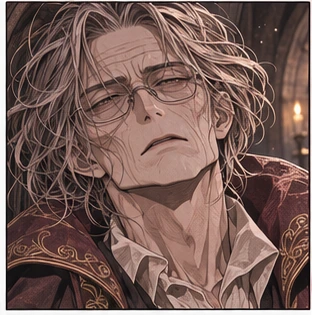
독일어 원문 · 한국어 번역
Mit welcher Faust dem Teufel sich verschrieben.
Ja! tiefer in dem Rohre stockt
Ein Tröpflein Blut, wie ich's ihm abgelockt.
Zu einem solchen einzigen Stück악마에게 주먹을 휘두른 것입니다. 예! 파이프 깊은 곳에서 막히게 됩니다. 내가 그에게서 뽑은 것과 같은 피 한 방울. 이런 한 장에
독일어 원문 · 한국어 번역
Wünscht' ich dem größten Sammler Glück.
Auch hängt der alte Pelz am alten Haken,
Erinnert mich an jene Schnaken,
Wie ich den Knaben einst belehrt,최고의 수집가의 행운을 기원합니다. 낡은 털도 낡은 고리에 걸려 있고, 그 모기들이 생각나네요 내가 한때 그 소년을 가르쳤던 것처럼,
독일어 원문 · 한국어 번역
Woran er noch vielleicht als Jüngling zehrt.
Es kommt mir wahrlich das Gelüsten,
Rauchwarme Hülle, dir vereint
Mich als Dozent noch einmal zu erbrüsten,그는 아마도 젊은 시절에도 여전히 성장하고 있을 것입니다. 진심으로 바라는 마음이 느껴져 연기처럼 따뜻한 껍질이 당신과 하나가 되었습니다 강사로서 다시 한 번 자랑하기 위해,
독일어 원문 · 한국어 번역
Wie man so völlig recht zu haben meint.
Gelehrte wissen's zu erlangen,
Dem Teufel ist es längst vergangen.
CHOR DER INSEKTEN:
Willkommen! willkommen,당신이 완전히 옳다고 생각하는 방법. 학자들은 그것을 달성하는 방법을 알고 있습니다. 마귀는 죽은 지 오래되었습니다. 곤충 합창단: 환영합니다! 환영합니다
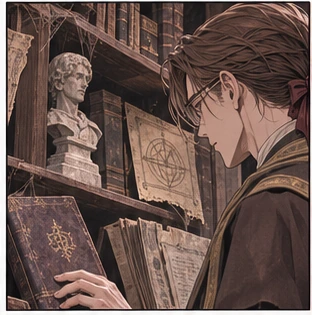
독일어 원문 · 한국어 번역
Du alter Patron!
Wir schweben und summen
Und kennen dich schon.
Nur einzeln im stillen당신은 오래된 후원자입니다! 우리는 떠서 흥얼거린다 그리고 이미 당신을 알고 있습니다. 한 번에 하나씩, 조용히
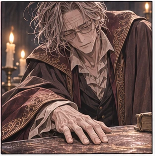
독일어 원문 · 한국어 번역
Du hast uns gepflanzt;
Zu Tausenden kommen wir,
Vater, getanzt.
Der Schalk in dem Busen당신은 우리를 심었습니다. 우리는 수천 명씩 오는데, 아버지, 춤을 췄어요. 가슴속의 장난
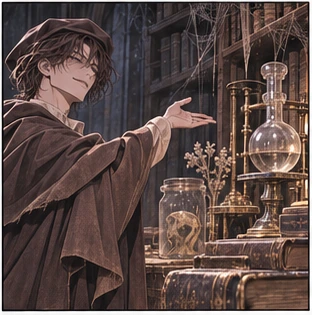
독일어 원문 · 한국어 번역
Verbirgt sich so sehr,
Vom Pelze die Läuschen
Enthüllen sich eh'r.
MEPHISTOPHELES:
Wie überraschend mich die junge Schöpfung freut!너무 많이 숨기고, 모피에서 나온 이 더 빨리 자신을 드러내십시오. 메피스토펠레스: 놀랍게도 그 젊은 창조물이 나를 기쁘게 합니다!
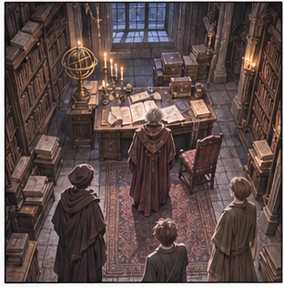
독일어 원문 · 한국어 번역
Man säe nur, man erntet mit der Zeit.
Ich schüttle noch einmal den alten Flaus,
Noch eines flattert hier und dort hinaus.--
Hinauf! umher! in hunderttausend Ecken그냥 뿌리면 시간이 지나면 거두게 됩니다. 다시 한 번 낡은 벌레를 흔들어 여기 저기 또 한 마리가 날아다닌다.-- 올라! 약! 수십만 모퉁이에서
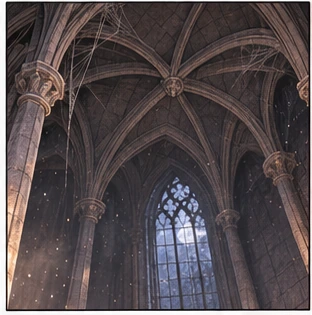
독일어 원문 · 한국어 번역
Eilt euch, ihr Liebchen, zu verstecken.
Dort, wo die alten Schachteln stehn,
Hier im bebräunten Pergamen,
In staubigen Scherben alter Töpfe,서둘러, 자기야, 숨어라. 낡은 상자들이 있는 곳, 여기 갈색 양피지 속에 먼지 쌓인 오래된 화분 파편 속에
독일어 원문 · 한국어 번역
Dem Hohlaug' jener Totenköpfe.
In solchem Wust und Moderleben
Muß es für ewig Grillen geben.
Komm, decke mir die Schultern noch einmal!그 두개골의 텅 빈 눈. 이런 혼란스럽고 패셔너블한 삶 속에서 귀뚜라미는 영원히 존재해야 합니다. 자, 다시 내 어깨를 감싸주세요!
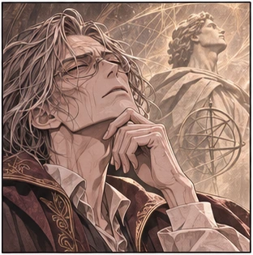
독일어 원문 · 한국어 번역
Heut bin ich wieder Prinzipal.
Doch hilft es nichts, mich so zu nennen;
Wo sind die Leute, die mich anerkennen?
FAMULUS:
Welch ein Tönen! welch ein Schauer!오늘 나는 다시 교장을 맡았다. 하지만 나를 그렇게 부르는 것은 도움이 되지 않습니다. 나를 알아보는 사람들은 어디에 있나요? 파뮬러스: 무슨 소리야! 정말 오한이야!
독일어 원문 · 한국어 번역
Treppe schwankt, es bebt die Mauer;
Durch der Fenster buntes Zittern
Seh' ich wetterleuchtend Wittern.
Springt das Estrich, und von oben계단이 흔들리고, 벽이 흔들리고, 창문 너머로 알록달록한 떨림 나는 번개처럼 번개를 봅니다. 스크 리드를 뛰어 넘고 위에서
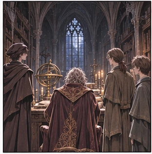
독일어 원문 · 한국어 번역
Rieselt Kalk und Schutt verschoben.
Und die Türe, fest verriegelt,
Ist durch Wunderkraft entsiegelt.--
Dort! Wie fürchterlich! Ein Riese석회와 잔해의 물방울이 옮겨집니다. 그리고 문은 굳게 잠겨 있었고, 기적의 힘으로 봉인이 풀린다.-- 거기! 얼마나 끔찍합니까! 거인
독일어 원문 · 한국어 번역
Steht in Faustens altem Vliese!
Seinen Blicken, seinem Winken
Möcht' ich in die Kniee sinken.
Soll ich fliehen? Soll ich stehn?파우스텐의 낡은 양털 안에 있어요! 그의 외모, 그의 파도 나는 무릎을 꿇고 싶습니다. 탈출해야 하나? 서야 하나?
독일어 원문 · 한국어 번역
Ach, wie wird es mir ergehn!
MEPHISTOPHELES:
Heran, mein Freund!--Ihr heißet Nikodemus.
FAMULUS:
Hochwürdiger Herr! so ist mein Nam'--Oremus.
MEPHISTOPHELES:
Das lassen wir! +아, 나한테는 어떨지! 메피스토펠레스: 어서, 친구! 당신의 이름은 니고데모입니다. 파뮬러스: 존경하는 분이여! 내 이름은 오레무스다. 메피스토펠레스: 그건 두고 갈게요! +
독일어 원문 · 한국어 번역
FAMULUS:
Wie froh, daß Ihr mich kennt!
MEPHISTOPHELES:
Ich weiß es wohl, bejahrt und noch Student,
Bemooster Herr! Auch ein gelehrter Mann
Studiert so fort, weil er nicht anders kann.파뮬러스: 당신이 나를 알게 되어 얼마나 기뻐요! 메피스토펠레스: 잘 알겠습니다. 나이가 많고 아직 학생입니다. 이끼 신사! 역시 배운 사람 그는 다른 일을 할 수 없기 때문에 계속 공부하십시오.
독일어 원문 · 한국어 번역
So baut man sich ein mäßig Kartenhaus,
Der größte Geist baut's doch nicht völlig aus.
Doch Euer Meister, das ist ein Beschlagner:
Wer kennt ihn nicht, den edlen Doktor Wagner,이것이 당신이 적당한 카드 하우스를 만드는 방법입니다. 가장 위대한 마음은 그것을 완전히 발전시키지 않습니다. 그러나 당신의 주인은 제화공입니다. 그를 모르는 사람은 고귀한 바그너 박사입니다.
독일어 원문 · 한국어 번역
Den Ersten jetzt in der gelehrten Welt!
Er ist's allein, der sie zusammenhält,
Der Weisheit täglicher Vermehrer.
Allwißbegierige Horcher, Hörer이제 배운 세계에서 첫 번째! 그들을 하나로 묶는 분은 바로 그분이시며, 매일 승수의 지혜. 전지적 청취자, 청취자
독일어 원문 · 한국어 번역
Versammeln sich um ihn zuhauf.
Er leuchtet einzig vom Katheder;
Die Schlüssel übt er wie Sankt Peter,
Das Untre so das Obre schließt er auf.그 주위에 떼지어 모여라. 그것은 의자에서만 빛난다. 그는 성 베드로처럼 열쇠를 연습합니다. 그는 바닥과 상단의 잠금을 해제합니다.
독일어 원문 · 한국어 번역
Wie er vor allen glüht und funkelt,
Kein Ruf, kein Ruhm hält weiter stand;
Selbst Faustus' Name wird verdunkelt,
Er ist es, der allein erfand.그가 모든 사람 앞에서 어떻게 빛나고 반짝이는지, 어떤 평판도, 어떤 명성도 지속되지 않습니다. 파우스투스의 이름조차 불분명하다. 혼자 발명한 사람은 바로 그 사람이다.
독일어 원문 · 한국어 번역
FAMULUS:
Verzeiht, hochwürdiger Herr! wenn ich Euch sage,
Wenn ich zu widersprechen wage:
Von allem dem ist nicht die Frage;
Bescheidenheit ist sein beschieden Teil.파뮬러스: 용서해주세요, 존경하는 분이여! 내가 너에게 말할 때 내가 감히 반박한다면: 무엇보다도 이것이 문제가 아닙니다. 겸허함은 그의 몫이다.
독일어 원문 · 한국어 번역
Ins unbegreifliche Verschwinden
Des hohen Manns weiß er sich nicht zu finden;
Von dessen Wiederkunft erfleht er Trost und Heil.
Das Zimmer, wie zu Doktor Faustus' Tagen,이해할 수 없는 실종 속으로 그는 고위인사를 찾는 방법을 모릅니다. 그는 돌아올 때 위로와 구원을 위해 기도합니다. 그 방은 파우스트 박사 시절과 마찬가지로
독일어 원문 · 한국어 번역
Noch unberührt seitdem er fern,
Erwartet seinen alten Herrn.
Kaum wag' ich's, mich hereinzuwagen.
Was muß die Sternenstunde sein?--그가 떠난 이후로 아직도 손길이 닿지 않은 채, 그의 노인을 기다립니다. 감히 들어갈 엄두가 나지 않습니다. 스타 아워는 몇 시일까요?--
독일어 원문 · 한국어 번역
Gemäuer scheint mir zu erbangen;
Türpfosten bebten, Riegel sprangen,
Sonst kamt Ihr selber nicht herein.
MEPHISTOPHELES:
Wo hat der Mann sich hingetan?나에게는 벽이 두려움에 빠진 것 같다. 문설주가 흔들리고, 볼트가 튀어오르고, 그렇지 않으면 당신은 스스로 들어오지 못할 것입니다. 메피스토펠레스: 그 남자는 어디로 갔나요?
독일어 원문 · 한국어 번역
Führt mich zu ihm, bringt ihn heran!
FAMULUS:
Ach! sein Verbot ist gar zu scharf,
Ich weiß nicht, ob ich's wagen darf.
Monatelang, des großen Werkes willen,나를 그에게로 인도하고 가까이 데려오라! 파뮬러스: 아! 그의 금지는 너무 엄격해서 감히 할 수 있을지 모르겠습니다. 몇 달 동안, 위대한 일을 위해,
독일어 원문 · 한국어 번역
Lebt' er im allerstillsten Stillen.
Der zarteste gelehrter Männer,
Er sieht aus wie ein Kohlenbrenner,
Geschwärzt vom Ohre bis zur Nasen,그는 가장 조용한 침묵 속에 살았습니다. 배운 사람 중 가장 온유한 사람, 그는 석탄 버너처럼 보입니다. 귀부터 코까지 검게 변했고,
독일어 원문 · 한국어 번역
Die Augen rot vom Feuerblasen,
So lechzt er jedem Augenblick;
Geklirr der Zange gibt Musik.불이 나면서 눈이 빨개지고, 그래서 그는 매 순간을 갈망합니다. 집게의 부딪치는 소리가 음악을 만들어냅니다.
독일어 원문 · 한국어 번역
MEPHISTOPHELES:
Sollt' er den Zutritt mir verneinen?
Ich bin der Mann, das Glück ihm zu beschleunen.
Kaum hab' ich Posto hier gefaßt,메피스토펠레스: 그 사람이 내 접근을 거부해야 할까요? 나는 그의 행복을 가속화하는 남자이다. 여기로 메일이 오자마자
독일어 원문 · 한국어 번역
Regt sich dort hinten, mir bekannt, ein Gast.
Doch diesmal ist er von den Neusten,
Er wird sich grenzenlos erdreusten.
저 뒤쪽에 손님이 왔다는 걸 알아요. 하지만 이번에는 그 사람이 가장 새로운 사람 중 한 명이에요. 그는 끝없이 짜증을 낼 것입니다.